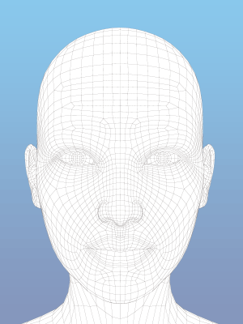

<!--标定图片时展示-->
<div class="m-demarcate-wrap" ng-controller="demarcatePopupController as demarcatePopupCtrl">
    <div class="demarcate-wrap-center">
        <p class="dem-cen-top" translate="FDS_00_11_01"></p>

        <div class="dem-cen-bottom f-cfb">
            <div class="dem-cen-bottom-img f-fl f-pr">
                <div>
                    
                </div>
            </div>
            <div class="dem-cen-bottom-img demarcate-img f-fr f-pr">
                    
            </div>
        </div>
    </div>

    <div class="demarcate-wrap-bottom f-cfb">
        <div class="dem-bom-btns f-fr f-cfb">
            <button class="u-button f-fl m-right15" type="button"
                    ng-click="demarcatePopupCtrl.getDemarcateKey()"
                    translate="FDS_00_07_11"></button>
            <button class="u-button f-fl u-button-blue-2"
                    type="button"
                    ng-click="demarcatePopupCtrl.cancelDemarcate()"
                    translate="FDS_00_07_02"></button>
        </div>
    </div>
</div>